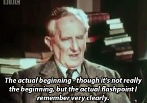

John Ronald Reuel Tolkien, 3 January 1892 – 2 September 1973
was an English writer, poet, philologist, and university professor who is best known as the author of the classic high fantasy works
The Hobbit, The Lord of the Rings, and The Silmarillion.
He served as the Rawlinson and Bosworth Professor of Anglo-Saxon and Fellow of Pembroke College, Oxford,
from 1925 to 1945 and Merton Professor of English Language and Literature and Fellow of Merton College, Oxford, from 1945 to 1959.
He was at one time a close friend of C. S. Lewis—they were both members of the informal literary discussion group known as the Inklings.
Tolkien was appointed a Commander of the Order of the British Empire by Queen Elizabeth II on 28 March 1972.

After Tolkien's death, his son Christopher published a series of works based on his father's extensive notes and unpublished manuscripts,
including The Silmarillion. These, together with The Hobbit and The Lord of the Rings, form a connected body of tales, poems, fictional histories,
invented languages, and literary essays about a fantasy world called Arda and Middle-earth[b] within it.
Between 1951 and 1955, Tolkien applied the term legendarium to the larger part of these writings.
While many other authors had published works of fantasy before Tolkien,
the great success of The Hobbit and The Lord of the Rings led directly to a popular resurgence of the genre.
This has caused Tolkien to be popularly identified as the "father" of modern fantasy literature, more precisely, of high fantasy.
In 2008, The Times ranked him sixth on a list of "The 50 greatest British writers since 1945".
Forbes ranked him the 5th top-earning "dead celebrity" in 2009.
source
Made by Elif Köseler